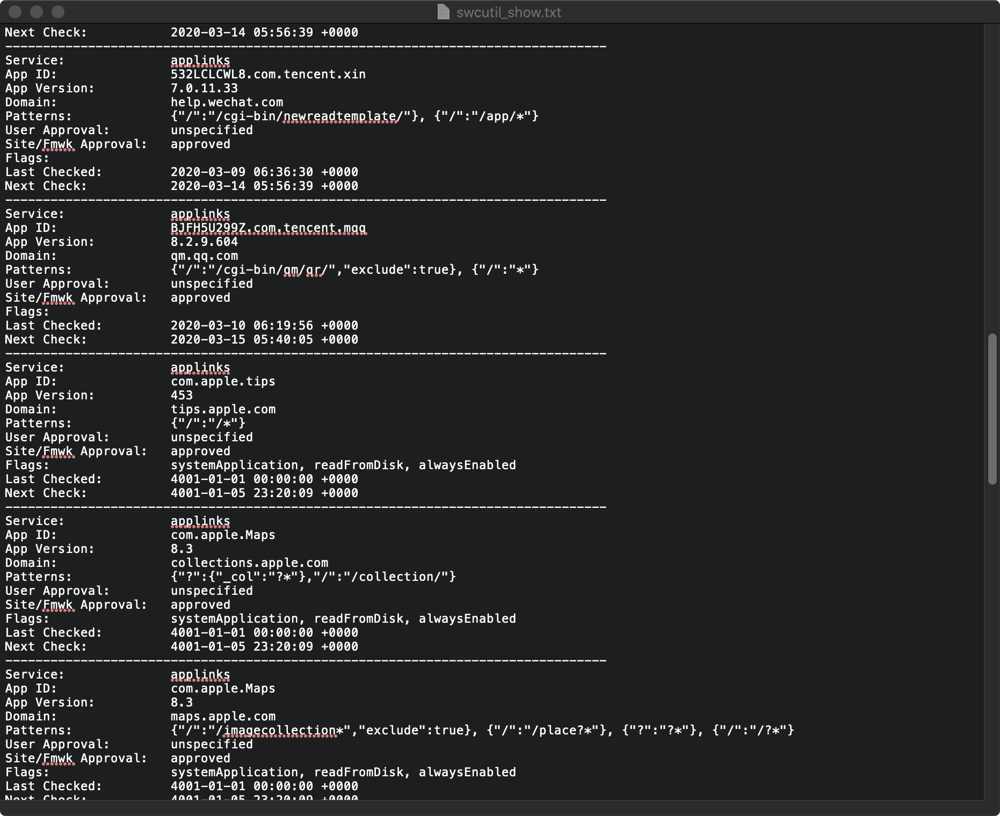

这片文章主要是记录一下几个月前发生的一件事，其中有些经验值得写一写。
背景
有一次我们的测试给我提了一个bug是说App间的跳转不生效了。我们的App是通过Universal Link进行跳转的，所以我第一时间先在我的手机检查了一下 Safari 的跳转和 apple-app-site-association 文件内容，发现都没有问题。当时就很困惑到底哪里出了问题，所以去社区看了看有没有类似的问题，发现了两个radar:
- rdar://45201697: iOS 12 cannot fetch AASA file within 5 minutes after rebooting the phone
- rdar://33893852: Certain users fail to download apple-app-site-association when downloading the app
看了一下基本都是下载 AASA 的问题，那问题来了，下载 AASA 文件的过程要怎么debug呢？
Debug
看了一下网上的方案，大致上分为两种：
Console
根据这个讨论 what is SWC Agent Database in keychain? 我们可以了解到 AASA 文件的下载是在 swcd 这个进程进行的。所以我们可以打开 Console，用手机重新安装App，选择查看 swcd 的log来进行debug。
我尝试了这种方法，发现问题是出在测试的手机上有代理，导致 AASA 下载失败了。
然而，后来我发现还有一种更神秘的方案可以进行debug。
Sysdiagnose
苹果的工程师在去年曾经介绍了一种 debug universal link 的方式：Twitter。结合 Sysdiagnose ，日志收集流程如下：
- 复现问题
- 同时按下两个音量键和侧边键1秒左右，如果成功触发 Sysdiagnose，你会感受到一个震动
- 等待10分钟
- 在手机的log中找到
sysdiagnose_YYYY.MM.DD_HH-MM-SS-XX…这样匹配你的时间的文件并发到你的设备上 - 打开其中的
swcutil_show.txt你就能看到非常详细的 universal link 信息。

好吧，真的是非常详细了。
总结
学到了一些很tricky的东西。